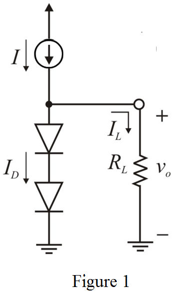

The expression for the diode current is,
 …… (1)
…… (1)
Output voltage is, .
Substitute  for
for  ,
,  for
for  and
and  for
for  .
.
Draw the circuit for two-diode voltage regulator.

The expression for the diode current is,
…… (1)
Output voltage is, .
Substitute for , for and for .
The output voltage should be .
Calculate the voltage across each diode.
Substitute for and  for
for  in equation (1).
in equation (1).
Calculate the current flowing through the load.
Apply Kirchhoff’s current law to the circuit.
Substitute for  and
and  for
for  .
.
Apply Kirchhoff’s voltage law to the circuit shown in Figure 1.
Thus, the value of the resistance is, .
Calculate the value of small-signal diode resistance.
Substitute  for
for  and for
and for  .
.
The diode current is,
From the diode equation, the voltage drop across the diode is,
Substitute for  ,
,  for
for  and for
and for  .
.
Calculate the output voltage under no load.
The resulting increase in the output voltage is,
Thus, the increment in the output voltage, is .
Now, consider the load resistance as, .
Calculate the value of the load current.
The load current is increased tofrom  .
.
Therefore, the diode current is reduced by .
Calculate the change in the output voltage for  .
.
Therefore, the change in the output voltage, for  is .
is .
Now, consider the load resistance as, .
Calculate the value of the load current.
The load current is increased to from
from  .
.
Therefore, the diode current is reduced by .
Calculate the change in the output voltage for  .
.
Therefore, the change in the output voltage, for is .
Now, consider the load resistance as,  .
.
Calculate the value of the load current.
The load current is increased tofrom  .
.
Therefore, the diode current is reduced by .
Calculate the change in the output voltage for .
Therefore, the change in the output voltage,  for is .
for is .